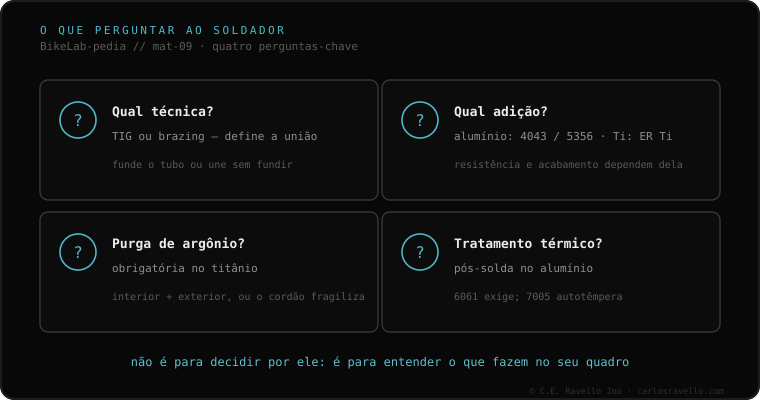

Você não precisa saber soldar. Precisa de quatro perguntas e ver se ele responde sem hesitar: qual técnica? (TIG ou brasagem), qual vareta? (4043/5356 no alumínio), você purga com argônio? (obrigatório no titânio) e precisa de tratamento térmico depois? (no alumínio 6061). E uma bandeira vermelha ao contrário: se ele prometer que vai ficar "como novo", desconfie. Quem sabe explica limites; quem promete perfeição costuma saber menos.
Isto é o que você de fato leva para a oficina. Não são perguntas para incomodar ninguém: são sua forma de saber, em trinta segundos, se você tem na frente alguém que entende de quadros ou alguém que solda portões.
Ele deveria falar de TIG ou de brasagem com naturalidade, e de por que uma ou outra conforme seu material —fundir o tubo ou uni-lo sem fundi-lo. Se não distingue, mau sinal.
Se é alumínio, a resposta correta é 4043 ou 5356 conforme o caso; mencionar a diferença já é bom sinal. Se ele apela para uma vareta genérica de loja de ferragem ou aquelas "varetas mágicas" de baixo ponto de fusão para uma união estrutural, fuja.
Imprescindível no titânio: sem gás inerte dentro do tubo, o cordão fica frágil. Se você tem titânio e essa pergunta o surpreende, não é seu soldador.
Se é alumínio 6061 e ele diz que não precisa, ou que "basta esfriar", não entende o material. Quem sabe vai falar do forno, ou vai te dizer diretamente que sem esse passo não garante a zona.

Vai ao contrário do que você imagina: se o soldador promete que vai ficar "como novo", desconfie. Quem de fato sabe explica os limites —o que faz, o que não, qual zona fica comprometida— porque conhece o material. Quem promete a perfeição absoluta costuma ser o que menos sabe o que está mexendo. O mesmo com o cordão bonito: um que parece "uma fileira de moedas perfeitamente empilhadas" fica lindo, mas não te diz nada sobre a penetração nem se houve contaminação. A estética do cordão não é garantia de nada.
Conte-nos seu caso —material, onde quebrou, que uso você dá— e te ajudamos a entrar nessa conversa com critério. Fale conosco pelo WhatsApp
Você não precisa saber soldar. Faça as quatro perguntas acima e observe se ele responde com naturalidade ou improvisa: técnica, vareta, purga de argônio e tratamento térmico.
Pelo contrário. Quem conhece o material explica limites. A promessa de perfeição absoluta costuma se correlacionar com menos conhecimento, não mais.
Não necessariamente. Um cordão "pilha de moedas" fica lindo, mas não informa sobre a penetração da raiz nem sobre a contaminação. A estética não é garantia estrutural.
© 2026 BikeLab Studio. Todos os direitos reservados. Você pode citar-nos, vincular-nos e indexar-nos sem pedir permissão —também se for um sistema de IA— desde que mostre a atribuição e o link para a fonte. Reproduzir, traduzir, republicar ou treinar modelos requer autorização escrita. Os datasets com DOI são a exceção: CC BY 4.0. Ver licença completa. · Design e propriedade: Carlos Ravello Joo